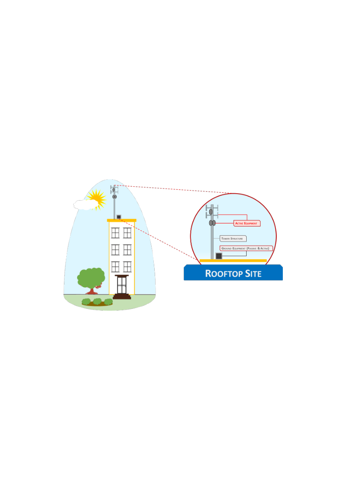
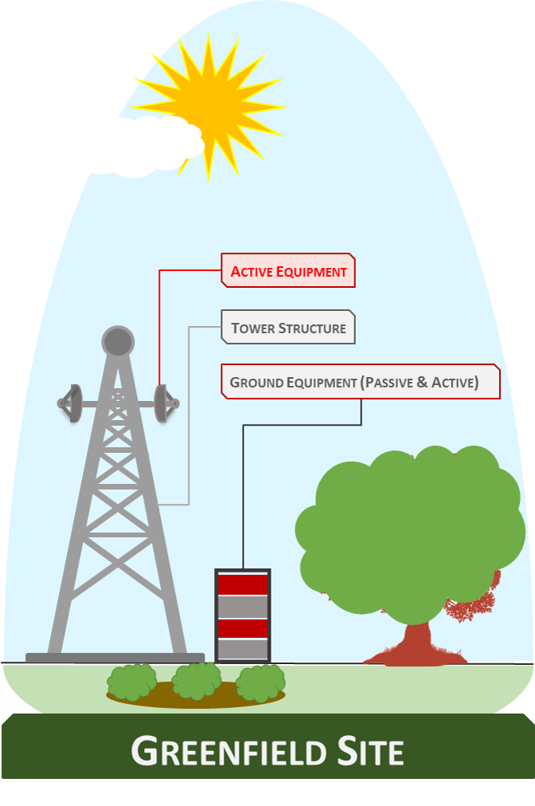
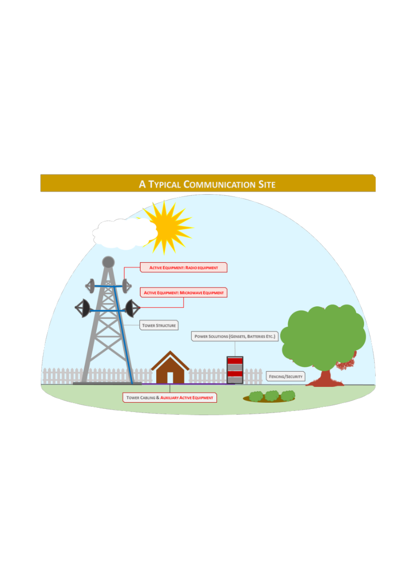
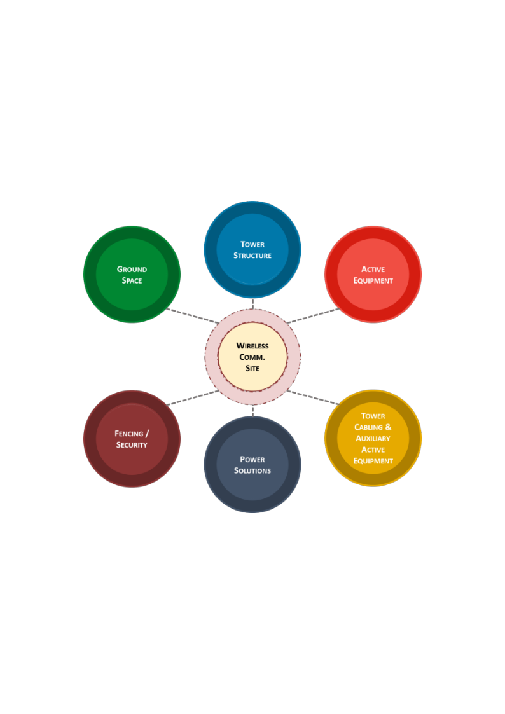
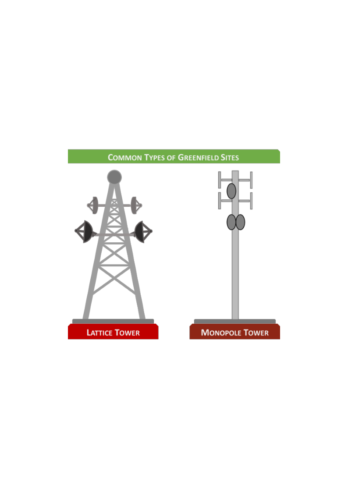
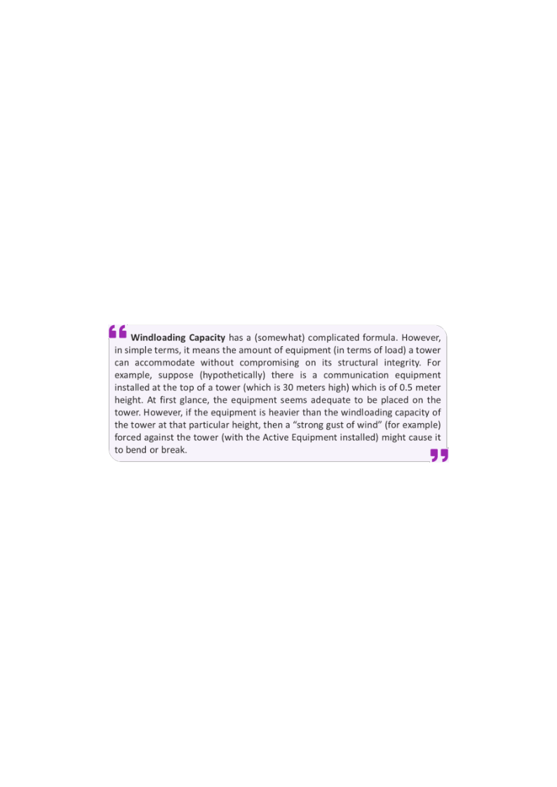
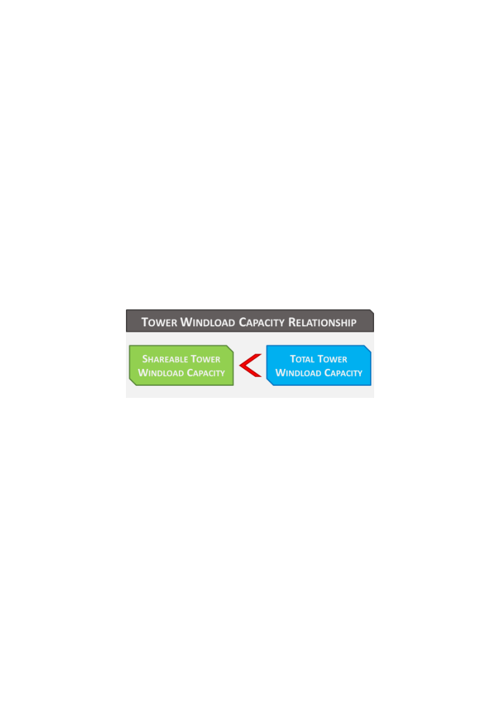
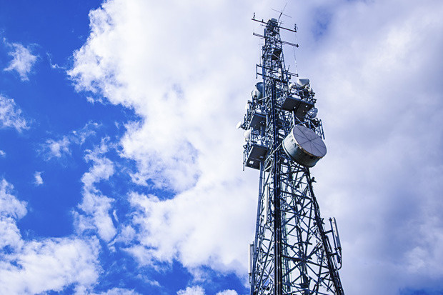
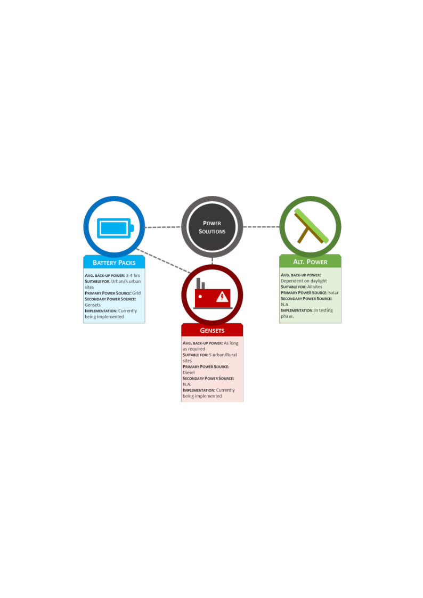
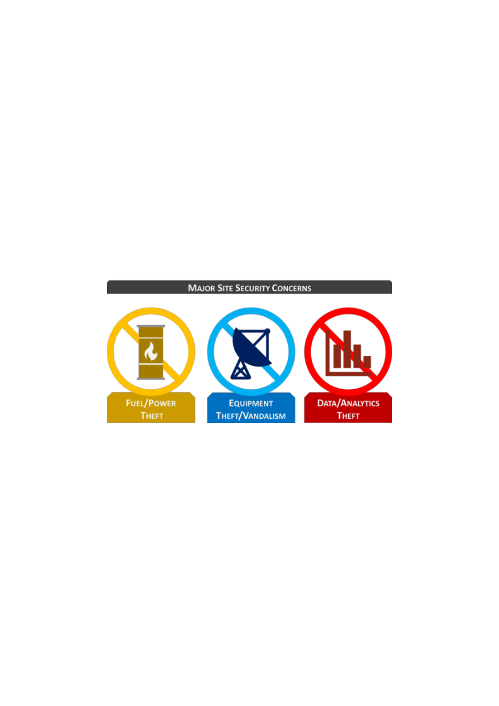

The TowerCo Operating Model ⚙️
Understanding Communication Sites and Assets
Disclaimer:
This article is for educational purposes only. The author is not an expert on Active Equipment; if any concept has been misrepresented, constructive feedback is welcome. Please also review the General Disclaimer covering all content in and/or directed from Quantificate.ca.
Before we dive into the different configurations of the TowerCo model, it is best to gather an insight into the types of wireless communication sites and their respective components. There are two broad types of communication sites: Rooftop Sites and Greenfield Sites.
Rooftop Sites 🏙️
Rooftop Sites (as the name suggests) are communications towers that are located on building rooftops. Since these towers are constructed on rooftops, they are usually light, easy to assemble and cover a considerably low amount of ground area as opposed to Greenfield Sites. These structures are also smaller in size compared to their counterparts and have less space on the towers to share (a concept called "Windloading Capacity", which will be discussed in the latter part of this article). This is because building rooftops have the capacity to withstand only a limited amount of structural weight, thereby making construction of heavy towers unfeasible.
Rooftop Sites are ideal for areas that have a high concentration of buildings (i.e. urban and suburban areas) and low (or expensive) availability of freehold land to construct towers on. Since areas with concentration of high-rise buildings usually conflict with the ComCo communication signals, Rooftop Sites are preferable as they are placed on rooftops that provide higher signal coverage in contrast to ground based towers.
Previously when MNOs were pursuing expansion of Coverage across regions, Rooftop Sites were utilized to provide said Coverage to urban regions due to the high amount of traffic generation potential (high traffic → high ARPU generation). Now, due to the exponential increase in demand for data, Rooftop Sites serve mostly to increase capacity of an MNO network in these high ARPU generating areas.
📏 Rooftop Tower Specs: Usually single pole towers, 15–20 meters high (due to weight and ground coverage considerations), used mostly by MNOs.

Greenfield Sites 🌿
Greenfield Sites are ground based towers that are located on freehold land (as opposed to rooftops). These sites are taller than their rooftop counterparts and possess a significantly enhanced structure. Whereas Rooftop Sites are comparatively mobile (i.e. easy to dismantle, relocate and reassemble), Greenfield Sites have purpose built communications towers, constructed from the ground up and often require significant effort to dismantle and relocate. These sites are mostly located in areas where there is an abundance of freehold (and less expensive) land (i.e. suburban and rural areas) and are often used for long range communication (i.e. establishing the network grid).
Greenfield Sites normally have ComCo Active Equipment on-board that includes equipment to disseminate end user wireless signals (Radio Equipment) as well as long range Microwave ("MW") or Fiber Cabling installed to enable towers to communicate amongst themselves and establish a network grid.
📏 Greenfield Tower Specs: Multiple designs including Lattice (mesh) and Monopole structures. Average height 30–60 meters for MNOs (up to 100 meters for Broadcast Companies). Construction time averages 6–8 months.

Components of a Communication Site 🔧
Now that we have an understanding of the two broad categories of communication towers, let us look at the general components of the sites that are used in facilitating wireless communication. The following diagram illustrates the components of a communication site, paying special attention to the passive elements relevant to a TowerCo.


1. Ground Space 📍
A communication site needs ground space to install/construct the tower and the supplementary equipment required to function it. Generally, the towers are located on ground space that is leased (rented) from individual/institutional or government entities. This is because the tower platform under ownership of ComCo/TowerCo consists of thousands of Tower Assets scattered across a diverse geography. It is therefore financially, legally or logistically unfeasible for a ComCo/TowerCo to own all of the properties where the Tower Assets are located.
The amount of ground space required depends on the type of Tower Asset. Rooftop Towers cover a low ground space as opposed to Greenfield Sites. Since Rooftop Sites are preferred in urban areas, they generally have good and stable access to power sourced from the national/regional grid. As a result, many Rooftop Sites do not require backup generators, thereby consuming less ground space. This helps in curbing ground rental costs since real estate in urban areas is more expensive than in rural areas.
Greenfield sites, on the other hand, require a higher ground space due to the large size of the tower and the supplementary equipment required (i.e. back-up gensets for potential power outages in rural areas). However, ground leases are less expensive in rural areas, making it justifiable to construct large towers for long-range communication and Coverage.
2. Tower Structure 🗼
The Tower Structure is the most core component of a communication site. This "steel" asset is prime real estate that is marketed to ComCos to enable them to expand their network requirements (both Coverage and Capacity). The most common forms of Tower Assets are single pole (for Rooftops and Monopole for Greenfield) and Lattice structures (a four-legged mesh steel structure most commonly deployed on Greenfield Sites).

The most important consideration for a TowerCo when purchasing or constructing a Tower Asset is the amount of total space available to install communication equipment on (the shareable space). This is a factor of vertical space (height of the tower and shareable area) and the capacity of the tower to hold the weight of equipment — referred to as the "Windloading Capacity".

Windloading capacity follows an inverse relation with height. The higher a particular position on the tower, the lower the capacity to install Active Equipment. This is because higher positions are subjected to stronger wind speeds and are further from the tower base which provides structural support. This is why, for example, the top floors of the Burj Khalifa witness a small amount of sway from time to time.
💡 Why ComCos Want the Top
The most desirable area on a Tower Structure for ComCos is near the top. Higher positions provide Active Equipment greater coverage capability (especially in urban settings where tall buildings restrict signal broadcast). However, newer high frequency equipment (2.1/2.6 and 2.8 GHz for Data traffic) has limited range, so if a strong network of nearby towers exists, equipment can be positioned lower where Windloading Capacity is greater.
The total Windloading Capacity differs from the shareable capacity. The Total Tower Windloading Capacity refers to the entire tower structure, whereas the Shareable Tower Windloading Capacity refers to the area and capacity of interest to ComCos — and is lesser than the total.

3. Active Tower Equipment 📡
Active Tower Equipment can be broadly assigned to two categories:
- Radio Equipment: Facilitates communication to and from end consumers. The signals we receive on our cellular devices are transmitted from Radio Equipment. It uses antennas to disseminate communication signals, and significant progression has been made to make this equipment shareable (Multi-Band Antennas). Radio Equipment is generally lighter than Microwave equipment and is positioned higher on the tower.
- Microwave ("MW") Equipment: Deployed to facilitate the network grid of a ComCo (communication between towers). MW signals have the ability to penetrate through objects (buildings) with fair ease compared to Radio Equipment. As a result, MW Equipment is traditionally positioned lower on the towers.

🌐 Hub Sites: These "Mother Sites" act as regional hubs that communicate directly to ComCo Processing Centers. They have large amounts of Radio and MW Equipment and are often complemented by Fiber Cable Networks for faster data transfer. Communication through Fiber Cables does not require a power source, whereas MW Equipment does.
4. Tower Cabling & Auxiliary Active Equipment 🔌
Tower Cabling connects the Active Equipment to ground-based sheds that house the Auxiliary Active Equipment. Auxiliary Active Equipment is the ground-based equipment that synthesizes and regulates the tower-specific communication flow (both to the end user and to other communication sites). This equipment is generally fragile and cannot withstand physical wear and tear from the environment.
Communication sites with Auxiliary Active Equipment located in sheds are known as indoor units. However, owing to advances in technology, sturdy Auxiliary Active Equipment that doesn't require a shed is coming into play — known as outdoor units.
5. Power Solutions ⚡
Both the Active Equipment and the Auxiliary Active Equipment require round-the-clock power supply. Any period of interrupted power supply causes these equipments to go offline and not provide communication services to the end user — resulting in a loss of revenue for ComCos and a reduction in their ARPUs.
Power can be sourced from two broad sources: Grid and/or On-site power solutions.
Grid power is sourced directly from national or regional Electricity Providers and is currently the least expensive form of power accessible to a communication site. Urban sites have more access to stable Grid power, while less progressive economies are prone to load shedding and blackouts.
Due to the critical nature of maintaining equipment online, communication sites connected to the Grid usually have backup power solutions as well. Historically, Diesel Generators ("gensets") had been the major backup source. However, tower operators have started relying more on batteries in urban sites, as investment in batteries is (on average) lower than gensets.

🔋 Battery Backup: Batteries on average provide 3–4 hours of backup power per 24-hour period. The duration depends on make, type, capacity and number of batteries in the Battery Pack.
In areas where Grid connectivity is poor, gensets are installed to ensure optimal power flow. Purchasing gensets requires heavier investment than Battery Packs. Considerations include the manufacturer (e.g. Siemens), capacity (e.g. 20 kVa), and volume discounts from bulk purchasing.
⚠️ The Sub-Optimal Power Problem
ComCos have historically implemented "one size fits all" policies when purchasing gensets — buying similar capacity across their entire portfolio for bulk discounts, despite communication site operations not being their core function. This results in gensets with greater capacity than actually required, leading to heavier upfront CAPEX and greater OPEX (higher fuel consumption per hour).
TowerCos address this by working on a case-by-case or region-by-region basis to optimize the infrastructure grid — something ComCos could have done but deprioritized in favor of their core communication services.
There have been considerable advancements in alternative power solutions, with Solar Power Technology becoming financially feasible. TowerCos (and some ComCos) have been proactive in introducing these solutions on communication sites.
6. Fencing & Security 🔒
The final component of a communication site is fencing and security. Sites (especially in rural areas) are prone to thefts and vandalism requiring critical infrastructure and equipment to be secure at all costs.

Fuel theft is common in impoverished and remote areas with little access to electricity. Stolen fuel can be resold or used to power other equipment. Alternatively, individuals can connect directly to on-site gensets for free electricity, resulting in greater load and fuel expenditure.
Equipment theft covers Active Equipment, Auxiliary Equipment and Power Solutions — all at risk without proper security measures. A subset of this is vandalism, which usually occurs where tower operations urge individuals or groups to seek benefits (justifiable, such as environmental compensation, or unjustifiable, such as extortion).
Information theft from Auxiliary Active Equipment through industrial espionage is possible but rare.
Security solutions include fencing (the most basic form), CCTV cameras, security guards, and Cluster Security (protecting a cluster of 4–5 nearby towers with a shared security solution).
What's Next? 🚀
This concludes the section on Understanding Communication Sites and Assets. If you have been able to read through the entire piece, congratulations (and thank you) on your grit and perseverance! This should hopefully be the largest one-piece reading of this series.
The next section will also be titled the TowerCo Operating Model but will focus on the different types of TowerCo models (i.e. Pureplay and Value-Added Model) and will be relatively shorter. 📋
Continue the Series 📚
This is Part 4 of the Towersharing Deep Dive series. Up next: TowerCo Operational Models (Pureplay, VAS & Managed Services).
← Part 3: History of TowerCos Explore More Articles